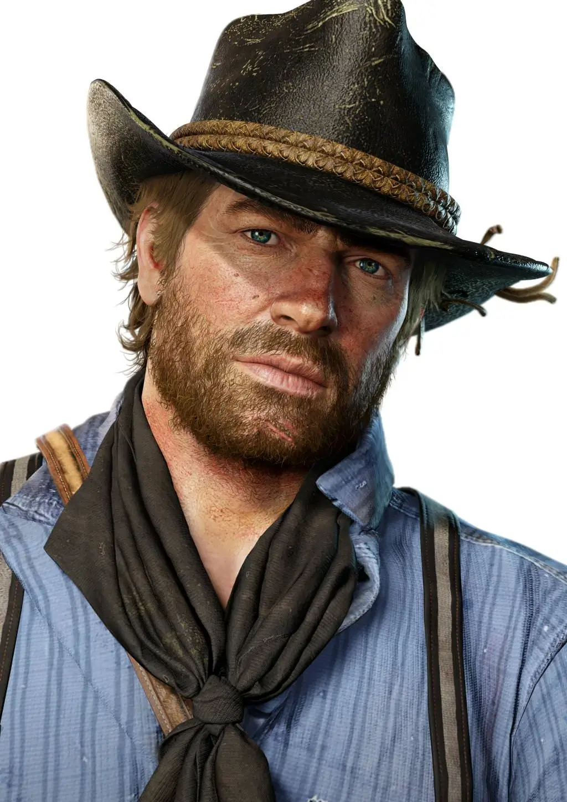
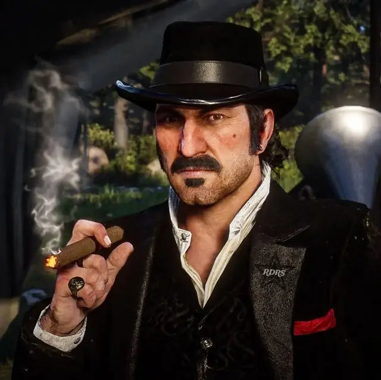
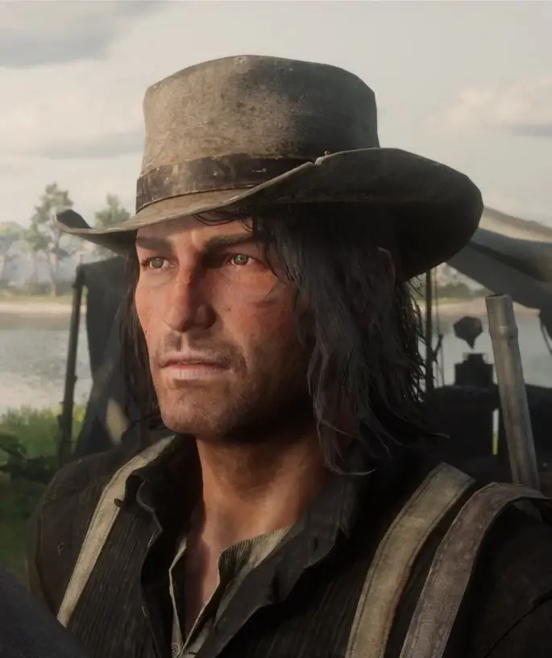
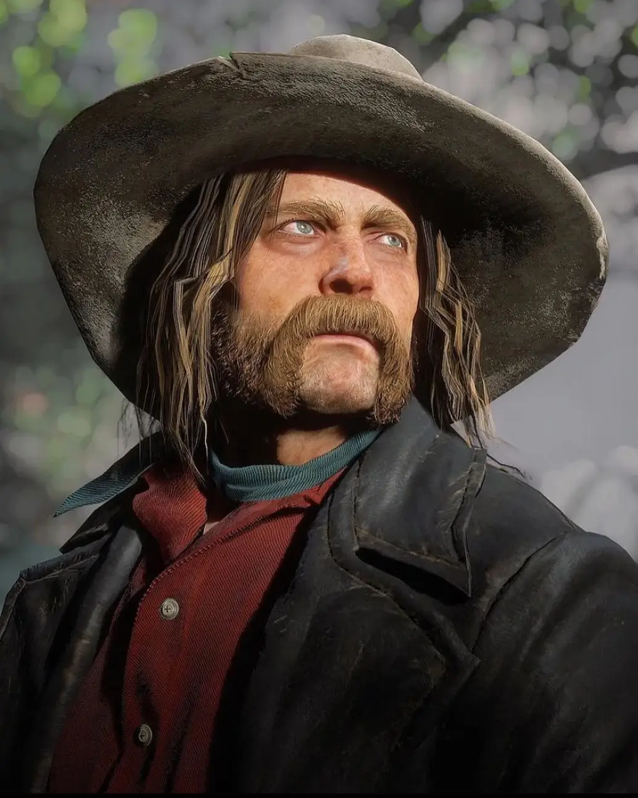
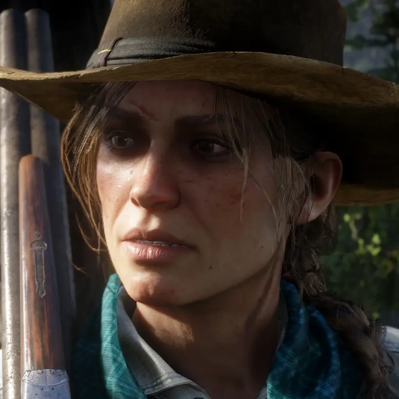
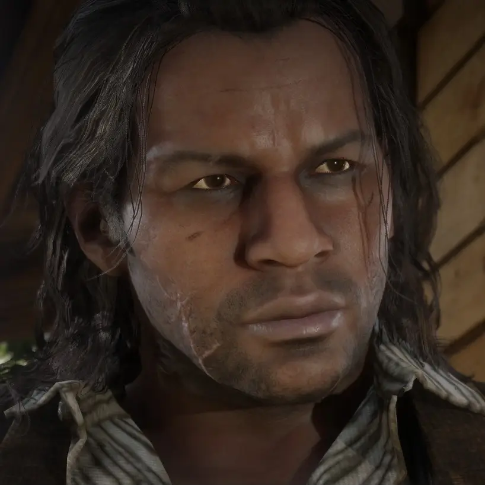
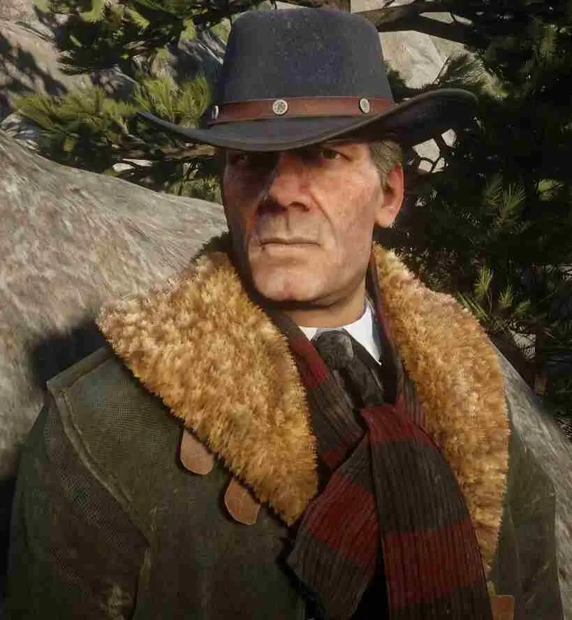

Personajes principales de Red dead Redemption II
|
Arthur Morgan
Protagonista del juego, un forajido leal a la pandilla Van der Linde que atraviesa un conflicto moral mientras su mundo se desmorona. |
 |
|
Dutch van der Linde
Líder carismático pero cada vez más inestable de la pandilla, cuya obsesión por la supervivencia lo lleva a tomar decisiones destructivas. |
 |
|
John Marston
Joven pistolero que busca dejar atrás la vida criminal para proteger a su familia, protagonista del primer Red Dead Redemption. |
 |
|
Micah Bell
Traicionero y despiadado miembro de la pandilla, cuyas acciones desatan la caída del grupo. |
 |
|
Sadie Adler
Viuda que se une a la pandilla tras la muerte de su esposo y se convierte en una feroz cazadora de recompensas. |
 |
|
Charles Smith
Guerrero fuerte y noble con ascendencia nativa y afroamericana, uno de los más leales aliados de Arthur. |
 |
|
Hosea Matthews
Consejero sabio y experimentado de la pandilla, intenta mantener a Dutch bajo control. |
 |